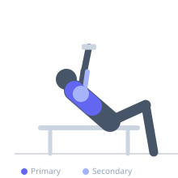

Exercise guide / Incline Squeeze Press with Chains
Incline Squeeze Press with Chains
An incline squeeze press — both dumbbells pressed together — with chains attached to each dumbbell for accommodating resistance. The continuous adduction squeeze targets the medial clavicular pectoral fibers, while the chains progressively load the lockout, maximizing tension through the top range where free weights typically feel easiest. This combination of technique and load variety creates an unusually high stimulus for the upper chest.
Primary muscles
pectoralis major clavicular
Secondary muscles
pectoralis major sternal
triceps medial head
deltoid anterior
Stabilizers
pectoralis minor
Equipment
Dumbbell (Fixed)
Adjustable Bench (Incline / Decline)


Starting position
- Lie on an incline bench (30–45 degrees). Attach chains to both dumbbells so they drape to the floor from the bottom of the press. Hold dumbbells pressed together at upper chest level, palms facing each other.
Setup
- Use hex dumbbells for flat-face contact. Secure chains to handles. Reduce dumbbell weight below normal squeeze press weight due to chain addition. Chains should begin engaging near the mid-range of the press.
Steps
- Step 1: Begin with dumbbells pressed firmly together at the upper chest, chains draping to floor.
- Step 2: Squeeze the dumbbells together and press them upward as a unit. Chains progressively engage as the dumbbells rise.
- Step 3: At full lockout, all chains are suspended. Maintain the inward squeeze throughout.
- Step 4: Lower under control, allowing chains to re-contact the floor, deloading the bottom. Repeat.
Coaching cues
- Squeeze the dumbbells together as hard as you can the entire set
- Press hard to the top — the chains reward complete lockout
Breathing
- Inhale at the bottom, exhale forcefully through the press.
Range of motion
- Full range from upper chest to lockout, squeeze maintained throughout.
Tempo
- 3-1-2-1
Common mistakes
- Letting the dumbbells separate — the squeeze must be constant throughout
- Using too much dumbbell weight before adding chain load
- Chains not engaging — means they are too long or not properly attached
Safety
- Secure chain attachments before beginning
- Significantly reduce dumbbell weight relative to standard squeeze press
- Have a spotter hand the dumbbells into position with chains attached
Training
- strength: 3–6 reps
- hypertrophy: 6–10 reps
- strength: 4–5 sets
- Rest: {'strength': 180, 'hypertrophy': 120}